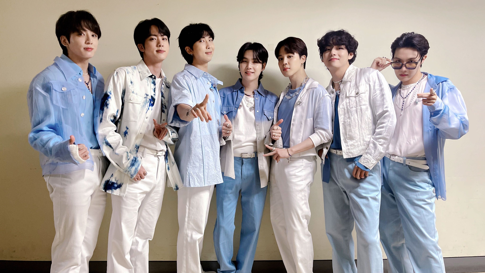

Cosas que me gustan:
En este apartado señalare las cosas que me gustan desde que tengo uso de razon hasta la actualidad, comencemos.
El kpop: Desde que estoy en preparatoria mi gusto por el kpop a ido aumentando, eh incluso siendo asi BTS una banda favorita que tengo:

La comida picante: honestamente soy fanatica de la comida picante y más si esta se disfruta de buena compañia.

Videojuegos: en esta parte soy muy fanatica de los videojuegos y más si estos tienen una buena historia.
Anime: en lo personal el anime es un modo para mi de viajar a travez de distintas historias y poder descubrir más la fantasia y creatividad de las personas.